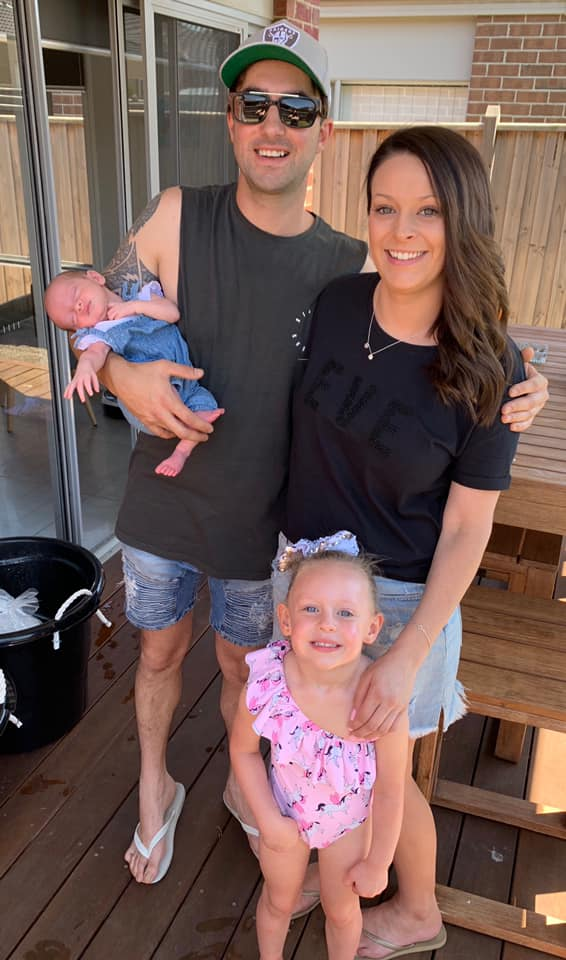
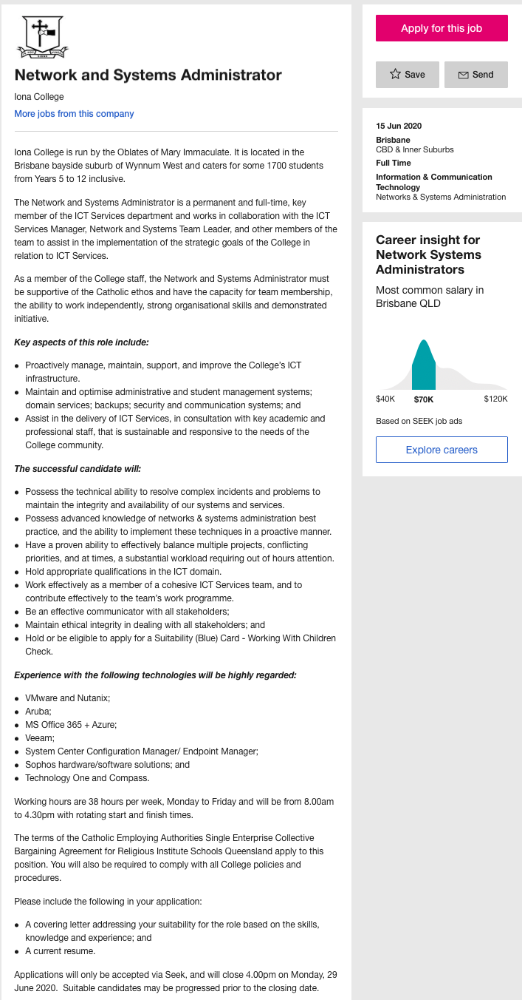

My name is Kristopher-Lee Hand I am currently enrolled in a Bachelors degree of Information Technology at RMIT and my student number is S3866212. i am a 32 year old Australian and currently living in Melbourne with my partner and 2 daughters, which are 1 and 5 years old. I finished high school in 2005 and I am currently working in the construction industry. In my spare time I like to make house/electronic music and DJ.
My ideal job is would be to be a IT system/network administrator and too see it click on the link here. A network administrator supports, configures, updates and maintains a company’s IT infrastructure.
The position appeals to me because I enjoy solving problems and learning new skills. Also computer networking is something that I have always been interested in.
The skills required for this job include troubleshooting, problem solving and be able to use a range of different technologies and systems. A bachelor’s degree is computer science or IT is preferred.
I plans to obtain these skills over the next few years studying and completing a bachelors degree in Information technology. While studying I will familiarise myself with different operation systems and also complete some networking courses for systems like Cisco and Aruba.
Myers-Briggs test - https://www.myersbriggs.org
Learning style test – https://educationplanner.org
Creativity test – https://testmycreativity.org
My results from the Myers-Briggs test are Extraversion, Intuition, Thinking and Judging.
My results from the learning style test are Auditory 55%, Visual 35% and Tactile 10%.
My results from creativity test mostly say that I am bold and curious.
I think the results are accurate as I am an organised person in and out of work, and I am always looking to improve. I prefer to learn more verbally but also visually. I think my results may influence my behaviour in a team because I am a thinker and I will make my oppinions and ideas heard. When forming a team I think I would be good being paired up with similar personalities and both opposite to get a different range of ideas and approaches.
My project idea is to create an app called “Hummify”. The app will be designed for musicians that don’t really know how to write music. It will be an app people can use on their apple and android mobile devices on the go. The idea is the app records sounds and instantly converts them into the form of a midi file and displays the notes in a sequencer so that you can replay the midi file and change the notes around so you can come up with the same melody that you hummed. Once you have the melody that you are after you will then be able to export to an email so you can import it to a project.
If available, this is a tool I would use quite a lot.. I make music with an app called ableton but when it comes to writing the music I find it very hard to get the sound out of my head into a melody. There are similar kind of apps like Melodyne which kind of do the same thing but they are all made for PCs. I think the app will appeal to music producers who are new to making electronic music and also producers who are learning music theory.
The app will be something you can download on your apple or android devices. Once you open the app you will be at a home screen, which will give you 2 options, open project or new project. If you press the open project button it will give you a list of recently saved projects which you have previously worked on and saved, you can open any of them and continue working on them. If you press the new project button it will open up a new project. When in the new project screen you will see play, stop, record, save, edit and export buttons along with a matrix sequencer. You will then need to press the record button and hum a melody into the device and then press stop. The device will take that sound and translate it into the form of a midi file, which will then be visible in the matrix sequencer. You can then replay the midi file and move the notes around to match the same sound that you hummed. The instrument that plays the notes back will be a standard piano. Once happy with your melody you can then press the export button and export the midi file via email, otherwise you can press the save button and save your project to work on at another time.
To create this mobile application, I will need a PC, along with the following software. Eclipse IDE for Java developers, Multi-OS engine and Adobe photoshop.
I will need to learn Java programming completely. I would need Java and will be working in eclipse workspace to create an app for android devices. For IOS devices, the use of Multi-OS engine will be required. This is an open source technology that lets you create android and IOS apps in Java. I will also need to have some knowledge of sound design and be familiar with Photoshop for some graphic designing.
If the project becomes successful it will be a must have app for all music producers. It will be an app that producers will learn from and also use for on the go melody making.